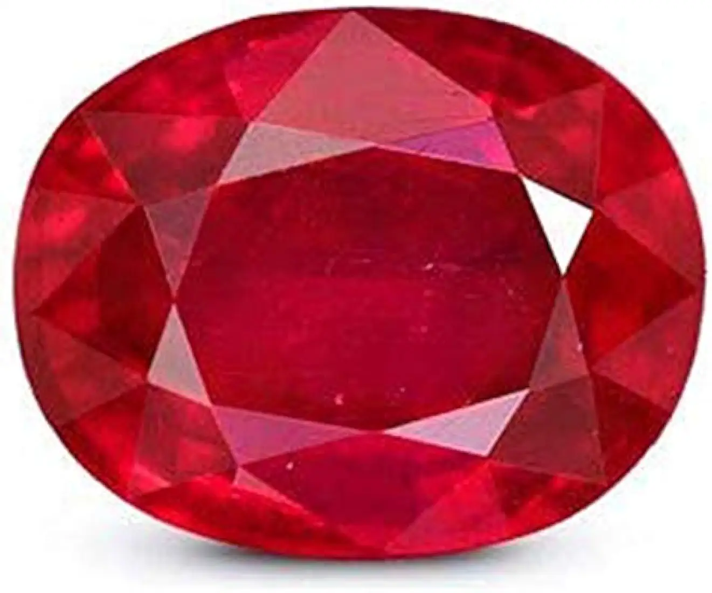
☀ সূর্য মাণিক্য Ruby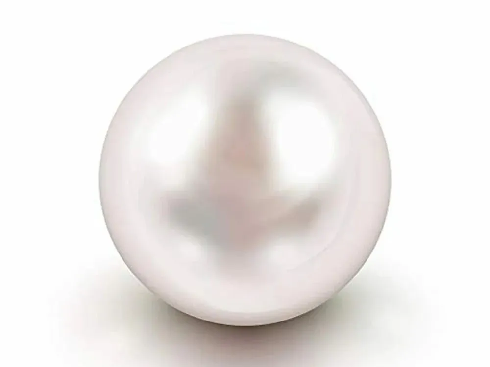
🌙 চন্দ্র মুক্তা Pearl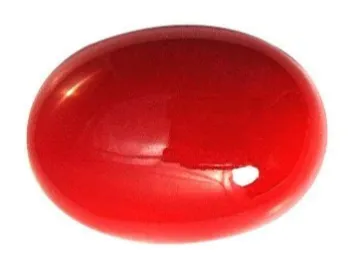
♂ মঙ্গল প্রবাল Red Coral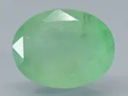
☿ বুধ পান্না Emerald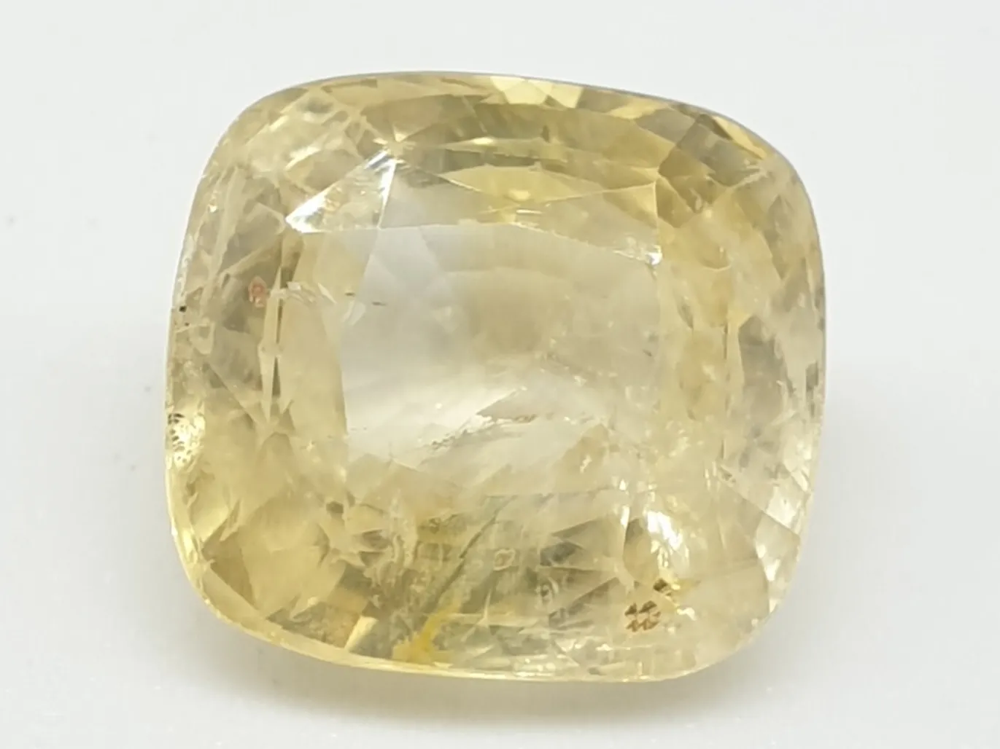
♃ বৃহস্পতি পুখরাজ Yellow Sapphire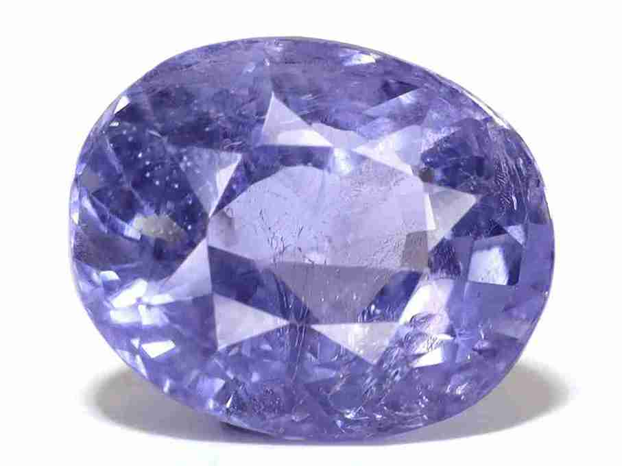
♄ শনি নীলকান্তমণি Blue Sapphire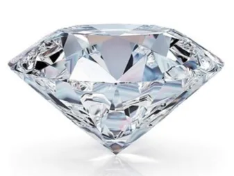
♀ শুক্র হীরা Diamond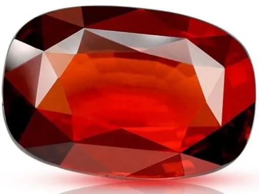
☊ রাহু গোমেদ Hessonite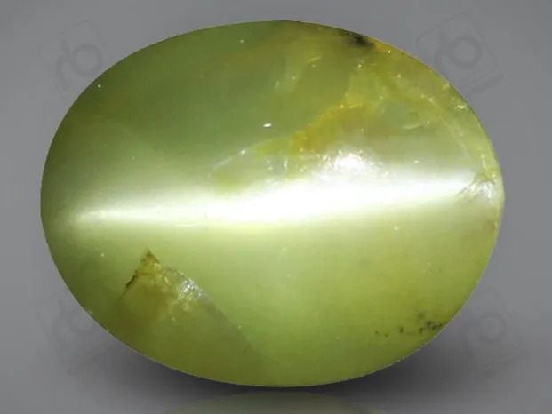
☋ কেতু লহসুনিয়া Cat's Eye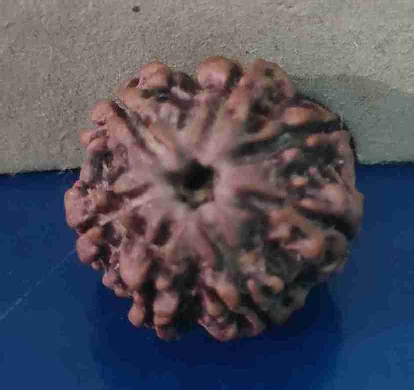
📿 শিব রুদ্রাক্ষ 1–15 মুখীগ্রহ-রত্ন ও রুদ্রাক্ষ —
পারাশর থেকে বিজ্ঞান পর্যন্ত
গ্রহের রশ্মি মানবদেহে প্রেরণ করে যে পাথর — তাই রত্ন। নয়টি গ্রহের রত্ন, উপরত্ন ও পনেরোটি রুদ্রাক্ষের সম্পূর্ণ শাস্ত্রীয় ও বৈজ্ঞানিক বিশ্লেষণ
পারাশর হোরা শাস্ত্রের ৮৩তম অধ্যায়ে বলা হয়েছে — "গ্রহাণাং রশ্মিভিঃ সর্বং জগৎ ব্যাপ্তং চরাচরম্" — সমস্ত চরাচর জগৎ গ্রহের রশ্মি দ্বারা ব্যাপ্ত। প্রতিটি গ্রহ নির্দিষ্ট তরঙ্গদৈর্ঘ্যের আলোকরশ্মি বিকিরণ করে। রত্নপাথর সেই রশ্মিকে শোষণ ও বিচ্ছুরণ করে মানবদেহে প্রেরণ করে।
আধুনিক mineralogy নিশ্চিত করেছে — প্রতিটি ক্রিস্টালের নিজস্ব piezoelectric property ও electromagnetic resonance আছে। Ruby-র Chromium আয়ন নির্দিষ্ট wavelength-এর আলো শোষণ করে ও নির্গত করে। Emerald-এর Beryl matrix বুধের সবুজ রশ্মির সাথে সামঞ্জস্যপূর্ণ বলে হাজার বছর ধরে বিশ্বাস করা হয়।
"রত্ন কোনো যাদুমন্ত্র নয় — এটি একটি cosmic antenna যা আপনার সংকল্পকে নির্দিষ্ট গ্রহীয় তরঙ্গদৈর্ঘ্যে tune করে দেয়। কিন্তু এই antenna সঠিক হওয়া চাই — ভুল রত্ন ভুল সংকেত পাঠায়।" — ড. প্রদ্যুৎ আচার্য
গুরুত্বপূর্ণ: এই পেজ সম্পূর্ণ শিক্ষামূলক। আমরা রত্নপাথর বিক্রি করি না। জন্মকুণ্ডলী দেখে রত্ন নির্বাচন কীভাবে করবেন — সেই পরামর্শ দেওয়াই আমাদের কাজ। কোন গ্রহের জন্য কোন রত্ন পরতে হয় — কুণ্ডলী বিশ্লেষণ ছাড়া এই প্রশ্নের উত্তর দেওয়া সম্ভব নয়।
মাণিক্য (চুনি) — সূর্যের রত্নপাথর
সূর্যের রত্ন কোনটি? সূর্যের রত্ন হলো মাণিক্য বা চুনি (Ruby) · Corundum পরিবার · Mohs: 9.0 · লগ্ন: সিংহ
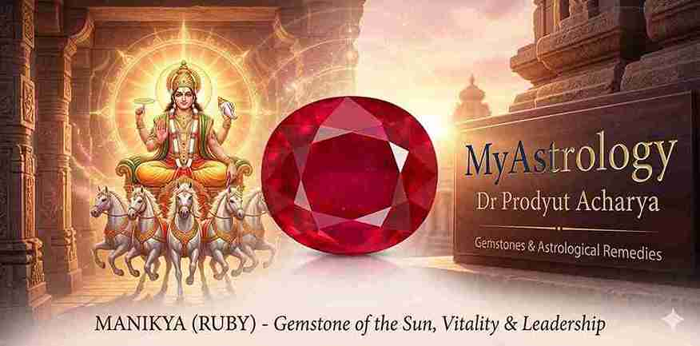
মাণিক্য — আত্মা ও নেতৃত্বের রত্ন
সূর্যের রত্ন কোনটি? — মাণিক্য (চুনি/Ruby)। আত্মবিশ্বাস, নেতৃত্ব ও পিতৃসম্পর্কের কারক।
সূর্য বৈদিক দর্শনে 'আত্মকারক' — কঠোপনিষদে বলা হয়েছে "নায়মাত্মা বলহীনেন লভ্য" — বলহীন আত্মা সত্য উপলব্ধি করতে পারে না। সূর্যের রশ্মিই সেই বল। মাণিক্যের গভীর রক্তিম আভা সৌরশক্তির পার্থিব প্রতিনিধি।
ঋগ্বেদের সূর্যসূক্তে (১.৫০) বলা হয়েছে — সূর্য হলেন জগতের চক্ষু। যখন কুণ্ডলীতে সূর্য দুর্বল, মানুষ হারায় আত্মদৃষ্টি। মাণিক রত্নের উপকারিতা হলো — সেই হারানো দৃষ্টিশক্তিকে, নেতৃত্বকে, আত্মপ্রকাশের শক্তিকে পুনরুজ্জীবিত করা।
"যে আত্মাকে চেনে, সে সূর্যকে চেনে। যে সূর্যকে চেনে, মাণিক্যের ভাষা তার কাছে স্পষ্ট।" — পারাশর হোরা শাস্ত্রের ব্যাখ্যায়
Marcus Aurelius-এর Meditations-এ আছে — "You have power over your mind, not outside events." মাণিক্য সেই ভেতরের শক্তিকে জাগায় — বাইরের পরিস্থিতি নয়, আপনার প্রতিক্রিয়াকে পরিবর্তন করে।
🔍 সার্চ করা হয়: "সূর্যের রত্ন কোনটি" · "মাণিক রত্নের উপকারিতা কি" · "মাণিক্য পাথরের উপকারিতা"
| রাসায়নিক সূত্র | Al₂O₃ (Aluminium Oxide / Corundum) + Cr³⁺ |
| রঙের রহস্য | Chromium আয়ন নীল-সবুজ আলো শোষণ → লাল আলো নির্গত |
| Mohs কঠোরতা | 9.0 — হীরার পরেই দ্বিতীয় কঠিন প্রাকৃতিক রত্ন |
| Refractive Index | 1.762 – 1.770 (double refraction) |
| Specific Gravity | 3.99 – 4.01 |
| Fluorescence | Strong Red under UV — authenticity indicator |
| সেরা উৎপত্তিস্থল | Myanmar (Mogok "Pigeon Blood") · Sri Lanka · Thailand |
| Certification | GIA · GGL · Gübelin — origin certificate সহ নিন |
পারাশর মত: "রবির রত্নং পদ্মরাগঃ" — পারাশর হোরাশাস্ত্র বলছে সূর্যের রত্ন পদ্মরাগ (Ruby)। সূর্য আত্মা, পিতা, নেতৃত্ব, সরকার, হৃদয় ও চোখের কারক।
শুভ লগ্ন: সিংহ (লগ্নেশ) · মেষ · বৃশ্চিক · ধনু লগ্নে যোগকারক। সূর্যের মহাদশা বা অন্তর্দশায় ধারণ করলে দ্রুত ফল।
অশুভ লগ্ন: মকর ও কুম্ভ — শনির লগ্নে সূর্যের রত্ন প্রতিকূল। তুলা লগ্নে সূর্য নীচ — অতিরিক্ত সতর্কতা প্রয়োজন।
দশা বিচার: সূর্যের দশা ৬ বছর। এই সময় যদি সূর্য কুণ্ডলীতে শুভ হয়, মাণিক্য আশীর্বাদস্বরূপ।
- শনি বা রাহু সূর্যের উপর দৃষ্টি দিলে আগে পরামর্শ নিন
- মকর ও কুম্ভ লগ্নে সাধারণত পরা উচিত নয়
- মাণিক্য ও নীলকান্তমণি একসাথে পরা নিষিদ্ধ — সূর্য-শনি পরম বৈরী
- দ্বাদশ বা ষষ্ঠ ভাবে সূর্য থাকলে প্রতিকূল ফল হতে পারে
- কুণ্ডলী বিশ্লেষণ ছাড়া পরা উচিত নয়
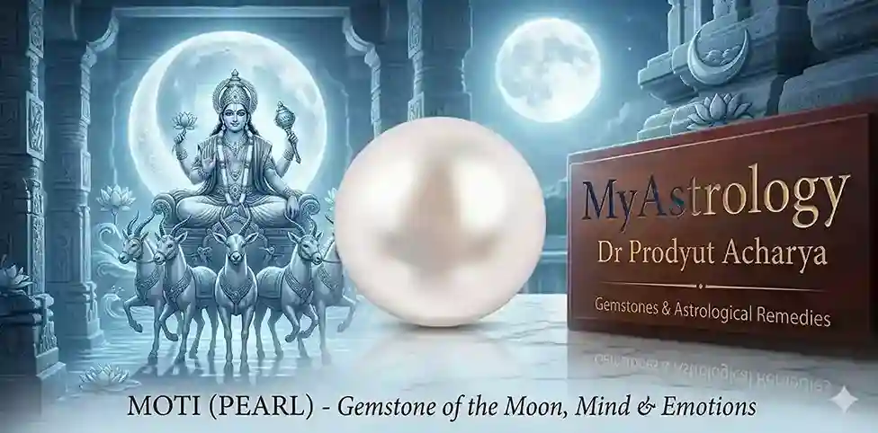
মুক্তা — মনের শান্তি ও মাতৃভক্তির রত্ন
চন্দ্র গ্রহের রত্ন কি? — মুক্তা বা মতি (Pearl)। মন, আবেগ ও মাতৃসম্পর্কের রত্ন।
চন্দ্র হলেন মনের কারক। অথর্ববেদে বলা হয়েছে — "চন্দ্রমা মনসো জাতঃ" — চন্দ্র মনের জন্মদাতা। মুক্তা জন্মায় ঝিনুকের বেদনা থেকে — একটি বালুকাকণা যন্ত্রণার মধ্যে দিয়ে পরিণত হয় অপার্থিব সৌন্দর্যে। এই রূপান্তরের দর্শনটাই মুক্তার আধ্যাত্মিক বার্তা।
মুক্তা রত্ন কার জন্য ভালো? — যারা মানসিক অস্থিরতায় ভুগছেন, ঘুমের সমস্যায় আছেন, মাতৃসম্পর্কে জটিলতা অনুভব করছেন — এবং অবশ্যই কুণ্ডলীতে চন্দ্র দুর্বল থাকলে।
"মুক্তা পৃথিবীর একমাত্র রত্ন যা জীবনের মধ্যে থেকে জন্মায় — ঝিনুকের কষ্টের কথা বলে এবং সৌন্দর্যের কথাও।"
🔍 সার্চ করা হয়: "চন্দ্র গ্রহের রত্ন কি" · "মুক্তা রত্ন কার জন্য ভালো" · "চন্দ্রের উপরত্ন কি"
| উপাদান | Calcium Carbonate (CaCO₃) — Aragonite + Conchiolin protein |
| Nacre গঠন | হাজারো platelet layer — প্রতিটি মাত্র 0.5 micron পুরু |
| Mohs কঠোরতা | 3.0 – 4.0 (জৈব রত্ন, তুলনামূলক নরম) |
| সেরা প্রকার | Natural Saltwater Pearl (Pinctada maxima) · Ceylon Pearl |
| উৎপত্তিস্থল | Persian Gulf · Sri Lanka (সেরা) · Japan (Mikimoto) · Australia |
| সতর্কতা | Cultured vs Natural — GGL lab report দিয়ে নিশ্চিত করুন |
পারাশর মত: "চন্দ্রস্য মুক্তাফলং রত্নম্" — চন্দ্রের রত্ন মুক্তা। চন্দ্র মন, মা, গৃহসুখ, জল, ভ্রমণ ও আবেগের কারক।
শুভ লগ্ন: কর্কট (লগ্নেশ) · বৃশ্চিক · মীন। চন্দ্রের মহাদশায় (১০ বছর) বিশেষ উপকারী।
বিশেষ নোট: মুক্তা তুলনামূলক নিরাপদ রত্ন। তবে রাহু বা কেতু চন্দ্রকে পীড়িত করলে আগে পরামর্শ নিন।
- Cultured pearl বা কৃত্রিম মুক্তায় জ্যোতিষীয় প্রভাব নেই
- অ্যাসিড, পারফিউম ও ক্লোরিন থেকে দূরে রাখুন
- রাহু বা কেতু চন্দ্রকে পীড়িত করলে বিশেষজ্ঞের পরামর্শ নিন
- মিথুন ও কন্যা লগ্নে সতর্কতা প্রয়োজন
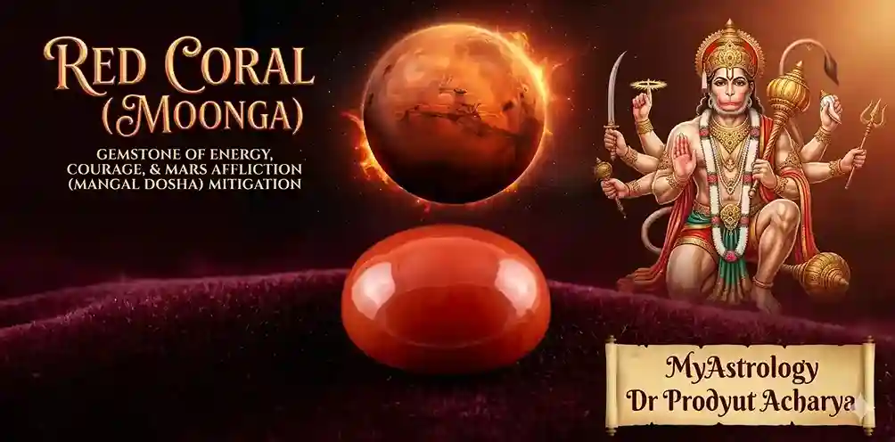
প্রবাল — শক্তি, সাহস ও মঙ্গল দোষ নিরাময়
মঙ্গলের রত্ন কি? — প্রবাল বা মুঙ্গা (Red Coral)। শক্তি, সাহস ও মঙ্গল দোষ প্রশমনে।
মঙ্গল হলেন সেনাপতির গ্রহ — ভগবান কার্তিকেয়ের প্রতিনিধি। স্কন্দপুরাণে বলা হয়েছে, কার্তিক মহাদেবের তেজ থেকে জন্ম — তাই মঙ্গল হলেন সেই অগ্নিতেজের রত্নে মূর্তিমান।
লাল প্রবাল রত্নের উপকারিতা বহুমুখী — রক্তের সমস্যায়, দুর্ঘটনার ভয়ে, ভাইয়ের সাথে বিবাদে এবং সবচেয়ে গুরুত্বপূর্ণ — মঙ্গল দোষে (Manglik Dosha) বিবাহের বাধা কাটাতে।
"প্রবাল সমুদ্রের অগ্নি — জল ও অগ্নির সংমিশ্রণ। মঙ্গলের তেজকে নিয়ন্ত্রিত করে সৃষ্টিশীল শক্তিতে রূপান্তরিত করে।"
🔍 সার্চ করা হয়: "মঙ্গলের রত্ন কি" · "লাল প্রবাল রত্নের উপকারিতা" · "মঙ্গলের উপরত্ন কি" · "প্রবালের উপরত্ন কি"
| জৈব উপাদান | Corallium rubrum — সামুদ্রিক অর্গ্যানিজম (Anthozoa শ্রেণি) |
| রাসায়নিক | Calcium Carbonate (CaCO₃) + Carotenoid pigment |
| Mohs কঠোরতা | 3.5 – 4.0 (তুলনামূলক নরম — রাসায়নিক থেকে দূরে রাখুন) |
| রঙের শ্রেণি | Ox Blood Red (সেরা) · Angel Skin · Pale Pink |
| সেরা উৎপত্তিস্থল | ভূমধ্যসাগর (Italian) · Japan · Taiwan |
| Certification | Govt. Registered Lab Certified — নকল প্রবাল বাজারে প্রচলিত |
পারাশর মত: "ভৌমস্য রক্তপ্রবালঞ্চ" — মঙ্গলের রত্ন রক্তবর্ণ প্রবাল।
মঙ্গল দোষ: ১ম, ৪র্থ, ৭ম, ৮ম বা ১২তম ভাবে মঙ্গল = মঙ্গল দোষ। বিবাহের আগে প্রবাল ধারণ করলে দোষের প্রভাব কমে।
শুভ লগ্ন: মেষ · বৃশ্চিক (মঙ্গল লগ্নেশ) · কর্কট · সিংহ। মঙ্গলের দশায় (৭ বছর) বিশেষ উপকারী।
- মিথুন, কন্যা, তুলা লগ্নে সাধারণত উপযুক্ত নয়
- উচ্চরক্তচাপ থাকলে আগে পরামর্শ নিন
- প্রবাল ও পান্না একসাথে পরবেন না — মঙ্গল-বুধ বৈরিতা
- নকল Italian coral বাজারে প্রচুর — lab certified নিন
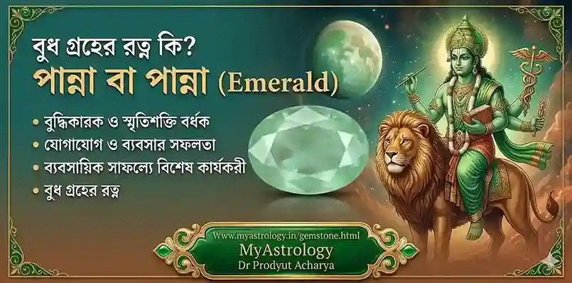
পান্না — বুদ্ধি, যোগাযোগ ও ব্যবসার রত্ন
বুধ গ্রহের রত্ন কি? — পান্না (Emerald)। বুদ্ধি, স্মৃতি ও ব্যবসায়িক সাফল্যে।
বুধ হলেন বৈদিক জ্যোতিষে 'বুদ্ধিকারক' — অথর্ববেদে বলা হয়েছে "বুদ্ধির প্রদীপ জ্বালাও" — পান্না সেই প্রদীপের সবুজ শিখা। Hermes যেমন Greek দর্শনে দেবতাদের দূত ও জ্ঞানের প্রতীক, বুধও তেমনই ভারতীয় জ্যোতিষে।
পান্না রত্ন কাদের পরা উচিত? — ছাত্র, লেখক, সাংবাদিক, আইনজীবী, ব্যবসায়ী এবং যাদের কুণ্ডলীতে বুধ দুর্বল — বিশেষত বুধের দশায়। Colombia-র Muzo mine থেকে আসা পান্না বিশ্বের সেরা।
"পান্নার সবুজ হলো প্রকৃতির সৃষ্টিশীলতার রঙ — এই রত্ন পরলে মন সতেজ হয়, চিন্তা স্বচ্ছ হয়।"
🔍 সার্চ করা হয়: "বুধ গ্রহের রত্ন কি" · "পান্না রত্ন কাদের পরা উচিত" · "পান্নার উপরত্ন কি"
| রাসায়নিক সূত্র | Be₃Al₂(SiO₃)₆ — Beryl + Chromium/Vanadium |
| রঙের কারণ | Cr³⁺ ও V³⁺ আয়ন — Colombia (Cr), Zambia (V) |
| Mohs কঠোরতা | 7.5 – 8.0 |
| বিশেষ বৈশিষ্ট্য | Jardin (inclusion) স্বাভাবিক — flawless emerald বিরল ও ব্যয়বহুল |
| সেরা উৎপত্তিস্থল | Colombia (Muzo/Chivor) · Zambia · Brazil |
| Certification | Govt. Registered Gemological Lab Certificate সহ নিন |
পারাশর মত: "বুধস্য মরকতং রত্নম্" — বুধের রত্ন মরকত (পান্না)।
শুভ লগ্ন: মিথুন · কন্যা (বুধ লগ্নেশ) · বৃষ · তুলা। বুধের মহাদশায় (১৭ বছর) বিশেষ কার্যকর।
ব্যবহারিক ফল: স্মৃতিশক্তি বৃদ্ধি, বাকশক্তি উন্নয়ন, ব্যবসায়িক দক্ষতা, লেখনীশক্তি উন্নতি।
- প্রবাল ও পান্না একসাথে পরবেন না — মঙ্গল-বুধ বৈরী
- মকর ও কুম্ভ লগ্নে সাবধান
- পান্না নাজুক — রাসায়নিক ও তীব্র তাপ থেকে দূরে রাখুন
- Synthetic (lab-grown) পান্না জ্যোতিষীয় ফল দেয় না — natural certified নিন
পুখরাজ — জ্ঞান, সমৃদ্ধি ও বিবাহসুখের রত্ন
বৃহস্পতির রত্ন কি? — পুখরাজ (Yellow Sapphire)। জ্ঞান, সমৃদ্ধি ও বিবাহসুখের জন্য।
বৃহস্পতি হলেন দেবগুরু — তৈত্তিরীয় উপনিষদে বলা হয়েছে "আচার্যদেবো ভব" — গুরু দেবতাস্বরূপ। পুখরাজের উজ্জ্বল হলুদ রঙ সেই গুরুজ্ঞানের প্রতীক — যে জ্ঞান অন্ধকারে আলো দেখায়।
পোখরাজ রত্ন কার জন্য শুভ? — বিশেষত মহিলাদের জন্য পুখরাজ অত্যন্ত গুরুত্বপূর্ণ। মহিলাদের কুণ্ডলীতে বৃহস্পতি পতির কারক। বিবাহ বিলম্বিত হলে, সন্তানলাভে বিলম্ব হলে পুখরাজ বিশেষ উপকারী।
"গুরু যেমন শিষ্যের পথ দেখান, পুখরাজ তেমনই ধারণকারীর জীবনে জ্ঞানের আলো নিয়ে আসে।"
🔍 সার্চ করা হয়: "বৃহস্পতির রত্ন কি" · "পোখরাজ রত্ন কার জন্য শুভ" · "বৃহস্পতির উপরত্ন কি" · "পোখরাজের উপরত্ন কি"
| রাসায়নিক সূত্র | Al₂O₃ + Iron (Fe³⁺) — Corundum পরিবার |
| Mohs কঠোরতা | 9.0 — অত্যন্ত টেকসই |
| সেরা রঙ | Canary Yellow · Lemon Yellow (Ceylon) · Golden Yellow |
| সেরা উৎপত্তিস্থল | Sri Lanka (Ceylon) · Myanmar · Thailand |
| Yellow Topaz বিভ্রান্তি | Yellow Topaz আলাদা রত্ন (Mohs 8) — পুখরাজের সম্পূর্ণ বিকল্প নয় |
পারাশর মত: "গুরোঃ পুষ্পরাগং রত্নম্" — বৃহস্পতির রত্ন পুষ্পরাগ (পুখরাজ)।
শুভ লগ্ন: ধনু · মীন (বৃহস্পতি লগ্নেশ) · কর্কট · বৃশ্চিক · মেষ। বৃহস্পতির মহাদশায় (১৬ বছর) বিশেষ উপকারী।
বিশেষ ক্ষেত্র: বিবাহ বিলম্ব, সন্তানলাভে বিলম্ব, শিক্ষায় বাধা, আর্থিক সংকট — এই সব ক্ষেত্রে পুখরাজ অত্যন্ত কার্যকর।
- বৃষ, মিথুন, তুলা লগ্নে সাবধান — বৃহস্পতি এখানে যোগকারক নয়
- মকর লগ্নে বৃহস্পতি নীচ — পুখরাজ প্রতিকূল হতে পারে
- Yellow Topaz সম্পূর্ণ পুখরাজের বিকল্প নয়
- হীরা ও পুখরাজ নির্দিষ্ট লগ্নে একসাথে সমস্যা করতে পারে
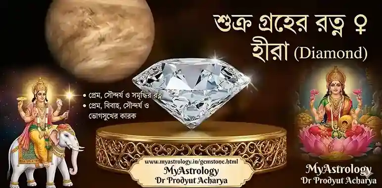
হীরা — প্রেম, সৌন্দর্য ও সমৃদ্ধির রত্ন
শুক্র গ্রহের রত্ন কি? — হীরা (Diamond)। প্রেম, বিবাহ, সৌন্দর্য ও ভোগসুখের কারক।
হীরা — কার্বনের সবচেয়ে পরিশুদ্ধ রূপ, কোটি বছর পৃথিবীর গভীরে অসীম চাপে তৈরি। শুক্র হলেন ভোগ ও যোগের সংগম — সৌন্দর্য, প্রেম ও আধ্যাত্মিক মিলনের প্রতীক।
হীরা রত্ন কার জন্য শুভ? — বৃষ ও তুলা লগ্নের জন্য বিশেষ শুভ। শুক্রের দশায় (২০ বছর) হীরা ধারণ করলে প্রেম, বিবাহ ও শিল্পকলায় অসাধারণ ফল পাওয়া যায়।
"হীরা পৃথিবীর সবচেয়ে পুরনো প্রেমের সাক্ষী — কোটি বছর আগে ভূগর্ভের অগ্নিতে জন্ম নিয়ে সে বলছে: সত্যিকারের সৌন্দর্য চিরন্তন।"
🔍 সার্চ করা হয়: "শুক্র গ্রহের রত্ন কি" · "হীরা রত্ন কার জন্য শুভ" · "শুক্রের উপরত্ন কি"
| রাসায়নিক সূত্র | C (Pure Carbon) — cubic crystal system |
| Mohs কঠোরতা | 10.0 — পৃথিবীর সবচেয়ে কঠিন প্রাকৃতিক পদার্থ |
| Refractive Index | 2.417 — অসাধারণ brilliance ও fire |
| 4C গ্রেডিং | Cut · Color · Clarity · Carat — GIA standard |
| বিকল্প রত্ন | White Sapphire (Mohs 9) · White Topaz (Mohs 8) — কম মূল্যে |
| সতর্কতা | Moissanite বা CZ — Lab-grown হলেও জ্যোতিষীয় ফল নেই |
পারাশর মত: "শুক্রস্য বজ্রং বা হীরকম্" — শুক্রের রত্ন হীরা।
শুভ লগ্ন: বৃষ · তুলা (শুক্র লগ্নেশ) · মকর · কুম্ভ। শুক্রের মহাদশায় প্রেম ও বিবাহে অসাধারণ ফল।
বিকল্প: হীরার পরিবর্তে White Sapphire বা White Topaz ব্যবহার করা যায় — তবে শক্তি কম।
- মেষ · কর্কট · বৃশ্চিক লগ্নে হীরা প্রতিকূল হতে পারে
- সিংহ লগ্নে সাধারণত উপযুক্ত নয়
- Synthetic diamond বা Moissanite জ্যোতিষীয় রত্ন নয়
- নির্দিষ্ট লগ্নে মাণিক্য ও হীরা একসাথে পরবেন না
নীলকান্তমণি — ন্যায়, কর্ম ও পরীক্ষার রত্ন
শনি খারাপ হলে কোন রত্ন? — নীলকান্তমণি। কিন্তু সবচেয়ে সতর্কতার রত্ন — আগে কুণ্ডলী দেখান।
শনি হলেন বৈদিক জ্যোতিষে ন্যায়ের দেবতা — পদ্মপুরাণে বলা হয়েছে শনি ব্রহ্মার নির্দেশে কর্মফল প্রদান করেন। শনি কাউকে অন্যায় শাস্তি দেন না — শুধু কর্মফল ফিরিয়ে দেন।
শনি খারাপ হলে কোন রত্ন পরতে হবে? — নীলকান্তমণি বা Blue Sapphire। কিন্তু এটি সবচেয়ে দ্রুততম ও শক্তিশালী রত্ন। শুভ হলে ৭২ ঘণ্টায় ইতিবাচক পরিবর্তন, অশুভ হলে একই সময়ে বিপর্যয়। তাই এটি পরীক্ষামূলকভাবে ৩ দিন বালিশের নিচে রাখুন আগে।
"নীলকান্তমণি হলো শনির পরীক্ষা — যে সৎকর্মী, তার জন্য এটি অমৃত। যে নয়, তার জন্য বিষ।"
🔍 সার্চ করা হয়: "শনি খারাপ হলে কোন রত্ন পরতে হবে" · "শনি গ্রহের রত্ন কি" · "শনির জন্য নীলা রত্ন কিভাবে পরতে হয়" · "নীলার উপরত্ন কোনটি"
| রাসায়নিক সূত্র | Al₂O₃ + Fe²⁺/Fe³⁺ + Ti⁴⁺ (Corundum) |
| রঙের কারণ | Iron ও Titanium-এর electron transfer — নীল রঙ তৈরি |
| Mohs কঠোরতা | 9.0 |
| সেরা মান | Kashmir "Cornflower Blue" — অত্যন্ত বিরল ও মূল্যবান |
| উৎপত্তিস্থল | Kashmir (সেরা) · Sri Lanka · Myanmar · Thailand |
| Certification | GIA বা Gübelin — Kashmir origin নিশ্চিত করুন |
পারাশর মত: "শনেস্তু নীলমণিঃ প্রোক্তঃ" — শনির রত্ন নীলমণি।
শুভ লগ্ন: মকর · কুম্ভ (শনি লগ্নেশ) · বৃষ · তুলা (শনি যোগকারক)।
অশুভ লগ্ন: মেষ · কর্কট · সিংহ · বৃশ্চিক — এই লগ্নে সাধারণত নিষিদ্ধ।
শনির সাড়েসাতি ও ঢৈয়্যা: এই সময়ে সঠিক লগ্নে নীলকান্তমণি ধারণ করলে শনির কুপ্রভাব কমে। তবে পরামর্শ ছাড়া পরা বিপজ্জনক।
- মেষ, কর্কট, সিংহ, বৃশ্চিক লগ্নে সাধারণত নিষিদ্ধ
- মাণিক্য (সূর্য) ও নীলকান্তমণি (শনি) কখনো একসাথে নয়
- মুক্তা (চন্দ্র) ও নীলকান্তমণি বেশিরভাগ লগ্নে একসাথে উচিত নয়
- পরীক্ষা পদ্ধতি: প্রথম ৭২ ঘণ্টা বালিশের নিচে রাখুন — দুঃস্বপ্ন, মাথাব্যথা বা দুর্ঘটনা হলে তৎক্ষণাৎ বন্ধ করুন
- কুণ্ডলী বিশ্লেষণ ছাড়া এই রত্ন পরা সর্বাধিক বিপজ্জনক
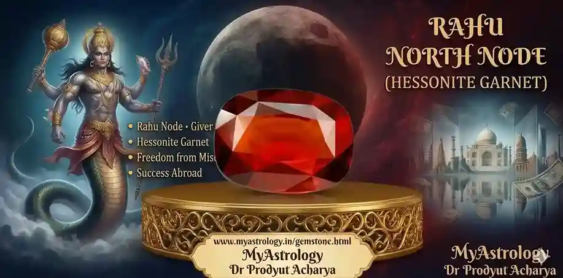
গোমেদ — রাহুর অদৃশ্য শক্তির রত্ন
রাহুর রত্ন কি? — গোমেদ (Hessonite Garnet)। রাহুর বিভ্রম থেকে মুক্তি, বিদেশে সাফল্যে।
রাহু হলেন ব্রহ্মাণ্ডের সেই শক্তি যা বিভ্রম তৈরি করে। পুরাণে রাহু সর্পের মাথা — অমৃত পান করেছেন, তাই অমর। কিন্তু ধড় নেই — তাই তিনি অসীম ক্ষুধার প্রতীক, কোনো কিছুতেই তৃপ্তি নেই।
গোমেদ রত্ন কাদের জন্য? — রাহুর মহাদশায় (১৮ বছর) যারা আছেন, বিদেশে কাজের সুযোগ খুঁজছেন, প্রযুক্তি ও media ক্ষেত্রে উন্নতি চান — এবং অবশ্যই কুণ্ডলীতে রাহু যোগকারক হলে।
🔍 সার্চ করা হয়: "রাহুর রত্ন কি" · "গোমেদ রত্ন কাদের জন্য" · "গোমেদের উপরত্ন কি"
| রাসায়নিক সূত্র | Ca₃Al₂(SiO₄)₃ — Grossular Garnet পরিবার |
| রঙ | Cinnamon Brown থেকে Orange-Red (গরুর প্রস্রাবের মতো রঙ) |
| Mohs কঠোরতা | 6.5 – 7.5 |
| Refractive Index | 1.734 – 1.759 |
| সেরা উৎপত্তিস্থল | Sri Lanka (Ceylon) — সর্বোত্তম · India (Rajasthan) |
পারাশর মত: "রাহোস্তু গোমেদকং রত্নম্" — রাহুর রত্ন গোমেদ।
শুভ লগ্ন: মিথুন · কন্যা · মকর · কুম্ভ — এই লগ্নে রাহু যোগকারক। রাহুর মহাদশায় বিদেশ, প্রযুক্তি ও রাজনীতিতে সাফল্যে সাহায্য করে।
বিশেষ ক্ষেত্র: রাহুর মহাদশায় অজানা ভয়, বিভ্রান্তি, শত্রুর ষড়যন্ত্র — গোমেদ এই সব থেকে রক্ষা করে।
- সিংহ ও কর্কট লগ্নে সাধারণত উচিত নয়
- মাণিক্যের সাথে পরবেন না (সূর্য-রাহু বৈরিতা)
- কুণ্ডলীতে রাহুর স্থান পর্যবেক্ষণ না করে পরবেন না
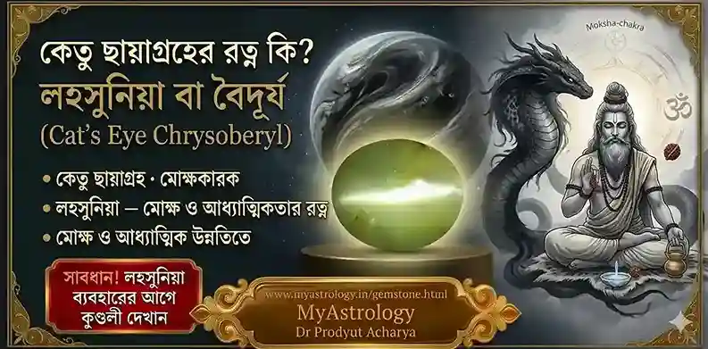
লহসুনিয়া — মোক্ষ ও আধ্যাত্মিকতার রত্ন
কেতুর রত্ন কি? — লহসুনিয়া বা বৈদূর্য (Cat's Eye Chrysoberyl)। মোক্ষ ও আধ্যাত্মিক উন্নতিতে।
কেতু হলেন 'সর্পের ধড়' — রাহুর বিপরীত শক্তি। রাহু যেখানে ভোগ চান, কেতু সেখানে চান বিরাগ, মুক্তি ও আধ্যাত্মিক জ্ঞান। মান্ডুক্য উপনিষদে বলা হয়েছে — "তুরীয়ং সর্বভূতস্থম্" — সেই চতুর্থ অবস্থাই মোক্ষ। কেতু সেই মোক্ষের দিকে নিয়ে যান।
বৈদুর্য বা ক্যাটস আই রত্নের উপকারিতা — আধ্যাত্মিক সাধকদের জন্য অতুলনীয়। কেতুর দশায় হঠাৎ পরিবর্তন, বৈরাগ্য ও আধ্যাত্মিক জাগরণ আসে — লহসুনিয়া সেই পথকে মসৃণ করে।
🔍 সার্চ করা হয়: "কেতুর রত্ন কি" · "বৈদুর্য বা ক্যাটস আই রত্নের উপকারিতা" · "ক্যাটস আই এর উপরত্ন কি"
| রাসায়নিক সূত্র | BeAl₂O₄ — Chrysoberyl (Alexandrite-র সহোদর) |
| Chatoyancy | Silk needle inclusions — চোখের মতো আলোকরেখা (cat's eye effect) |
| Mohs কঠোরতা | 8.5 |
| Specific Gravity | 3.71 – 3.75 |
| সেরা উৎপত্তিস্থল | Sri Lanka · India (Kerala) · Brazil |
| সতর্কতা | Tiger's Eye (Quartz) লহসুনিয়া নয় — Chrysoberyl চিনে নিন |
পারাশর মত: "কেতোস্তু বৈদূর্যং রত্নম্" — কেতুর রত্ন বৈদূর্য (Cat's Eye)।
শুভ লগ্ন: ধনু · মীন · বৃশ্চিক লগ্নে কেতু যোগকারক। কেতুর মহাদশায় (৭ বছর) পরলে দ্রুত ফল।
বিশেষ ক্ষেত্র: দীর্ঘমেয়াদি রোগ, অজানা ভয়, শত্রুর ষড়যন্ত্র, আধ্যাত্মিক উন্নতি — এই সব ক্ষেত্রে লহসুনিয়া বিশেষ উপকারী।
- কেতু অশুভ থাকলে হঠাৎ ক্ষতি হতে পারে — আগে পরামর্শ অবশ্যই
- Tiger's Eye (Quartz) নয়, Chrysoberyl Cat's Eye কিনুন
- সূর্যের রত্নের সাথে পরা সমস্যাসৃষ্টিকারী হতে পারে
Razorpay দ্বারা সুরক্ষিত · UPI · Card · Net Banking
রত্নপাথর পরামর্শ বুক হয়েছে।
Payment ID: —
নিচের WhatsApp লিঙ্কে তথ্য পাঠান।
🌿 উপরত্ন — মূল রত্নের সাশ্রয়ী ও কার্যকর বিকল্প
মূল নবরত্নের সাশ্রয়ী বিকল্প হিসেবে উপরত্ন ব্যবহার করা যায় — একই গ্রহীয় তরঙ্গ, কম মূল্য
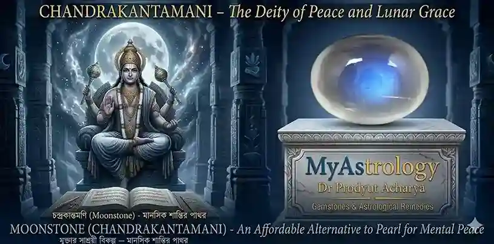
চন্দ্রকান্তমণি (Moonstone)
মুক্তার সাশ্রয়ী বিকল্প — মানসিক শান্তির পাথর
🔬 বৈজ্ঞানিকভাবে Moonstone Feldspar শ্রেণির খনিজ। Adularescence ঘটনাটি (নীলাভ আভা) আলোর বিচ্ছুরণের কারণে — Orthoclase ও Albite স্তরের মধ্যে। এটি পরলে cortisol কমে ও melatonin বাড়ে বলে গবেষণায় ইঙ্গিত।
চন্দ্রকান্তমণি ভারতীয় আয়ুর্বেদে 'চন্দ্রমণি' নামে পরিচিত। চন্দ্রশেখর সংহিতায় উল্লেখ আছে এটি চন্দ্রের তরঙ্গদৈর্ঘ্য শোষণ করে — তাই পূর্ণিমার রাতে বাইরে রেখে 'চার্জ' করার প্রচলন। মানসিক শান্তি, আবেগ নিয়ন্ত্রণ ও নারীশক্তির জাগরণে সাহায্য করে।
🔍 "চন্দ্রের উপরত্ন কি" · "Moonstone কি কাজ করে" · "মুক্তার বিকল্প রত্ন কি"
কর্কট লগ্ন, বৃশ্চিক ও মীন লগ্নে বিশেষ উপকারী। চন্দ্রের মহাদশায় (১০ বছর) মুক্তা না পেলে Blue Sheen Moonstone পরুন। শুক্লপক্ষের সোমবার রুপায় ধারণ — কনিষ্ঠা আঙুল।
- Cultured moonstone বা glass imitation বাজারে প্রচুর — certified কিনুন
- রাহু বা কেতু চন্দ্রকে পীড়িত করলে বিশেষজ্ঞের পরামর্শ নিন
- মিথুন ও কন্যা লগ্নে সাবধানতা প্রয়োজন
- অ্যাসিড ও পারফিউম থেকে দূরে রাখুন

সানস্টোন (Sunstone)
মাণিক্যের সাশ্রয়ী বিকল্প — আত্মবিশ্বাস ও নেতৃত্বের পাথর
🔬 Sunstone-এ Aventurescence ঘটনাটি Hematite বা Goethite inclusion-এর কারণে। Oregon-এর Sunstone (Labradorite variety) সর্বোচ্চ মানের। এটি পরলে dopamine নিঃসরণ বাড়ে ও আত্মবিশ্বাস উন্নত হয় বলে ক্রিস্টাল থেরাপিতে বিশ্বাস।
সানস্টোনের উজ্জ্বল কমলা-সোনালী রঙ সৌরশক্তির প্রতিফলন। স্কন্দপুরাণে সূর্যের আলোকরশ্মি ধারণকারী পাথরের উল্লেখ রয়েছে। আত্মবিশ্বাস, নেতৃত্ব ও পিতৃশক্তি বৃদ্ধিতে মাণিক্যের বিকল্প হিসেবে ব্যবহার্য।
🔍 "সূর্যের উপরত্ন কোনটি" · "মাণিকের উপরত্ন কি" · "সানস্টোন কি কাজ করে"
সিংহ ও মেষ লগ্নে বিশেষ উপকারী। সূর্যের মহাদশায় (৬ বছর) মাণিক্য না পেলে সানস্টোন বা Red Spinel ব্যবহার করুন। রবিবার সকালে ধারণ শুভ।
- Lab certified কিনুন — নকল sunstone বাজারে আছে
- মকর ও কুম্ভ লগ্নে সাবধান
- শনি দশায় সূর্যের রত্ন পরার আগে বিশেষজ্ঞের পরামর্শ নিন
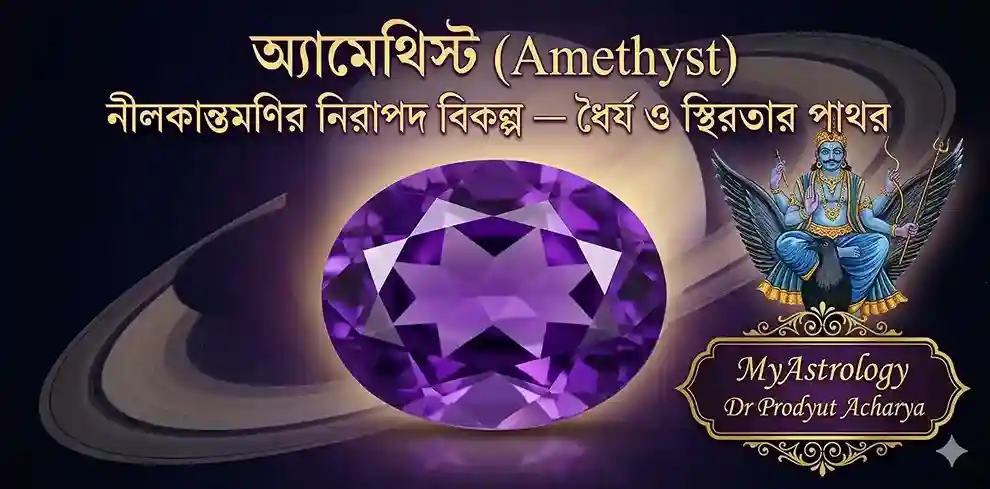
অ্যামেথিস্ট (Amethyst)
নীলকান্তমণির নিরাপদ বিকল্প — ধ্যান ও মানসিক শান্তির পাথর
🔬 বৈজ্ঞানিকভাবে Amethyst piezoelectric — চাপে বিদ্যুৎ উৎপন্ন করে। এটি পরলে nervous system শান্ত হয়, ঘুমের উন্নতি হয়, anxiety কমে এবং cortisol হ্রাস পায়। Mohs ৭ — যথেষ্ট টেকসই।
অ্যামেথিস্ট গ্রিক 'ametustos' শব্দ থেকে — 'নেশা থেকে মুক্ত'। ভারতীয় জ্যোতিষে শনির বেগুনি আভার সাথে Amethyst-এর রঙের মিল। এটি সবচেয়ে নিরাপদ শনির উপরত্ন — নীলকান্তমণির মতো পরীক্ষা ছাড়াই পরা যায়।
🔍 "শনির উপরত্ন কি" · "অ্যামেথিস্ট রত্ন কি কাজ করে" · "নীলার বিকল্প রত্ন কি"
মকর ও কুম্ভ লগ্নে (শনির লগ্নেশ) বিশেষ উপকারী। শনির সাড়েসাতি বা ঢৈয়্যার সময় নীলকান্তমণি পরার আগে Amethyst দিয়ে পরীক্ষা করুন — ৩ দিন পরে যদি ভালো লাগে তবে নীলকান্তমণি পরুন।
- Heated (Citrine থেকে রূপান্তরিত) Amethyst সস্তা — সত্যিকার Amethyst নিন
- মেষ ও সিংহ লগ্নে সাবধান (শনি অস্ত)
- নীলকান্তমণির সাথে একসাথে পরবেন না

সিট্রিন (Citrine)
পুখরাজের সাশ্রয়ী বিকল্প — সমৃদ্ধি ও জ্ঞানের পাথর
🔬 Citrine প্রাকৃতিক হলুদ Quartz — Fe³⁺ আয়নের কারণে রং। বেশিরভাগ বাজারের Citrine আসলে heat-treated Amethyst — তাই সত্যিকার Citrine-এর দাম বেশি। এটি উপস্থিতিতে positive energy ছড়ায় বলে aromatherapy বিশেষজ্ঞরা মনে করেন।
বৃহস্পতির হলুদ রঙের সাথে Citrine-এর রঙের মিল। স্কন্দপুরাণে বৃহস্পতিকে জ্ঞান ও সমৃদ্ধির অধিপতি বলা হয়েছে। পাশ্চাত্য crystal healing-এ Citrine 'Merchant's Stone' — দোকানের cash drawer-এ রাখলে সমৃদ্ধি আসে।
🔍 "বৃহস্পতির উপরত্ন কি" · "সিট্রিন রত্নের উপকারিতা" · "পোখরাজের উপরত্ন কি"
ধনু ও মীন লগ্নে বিশেষ উপকারী। বৃহস্পতির মহাদশায় (১৬ বছর) পুখরাজ না পেলে Citrine পরুন। ব্যবসায়িক সাফল্য, আর্থিক সমৃদ্ধি ও জ্ঞান বৃদ্ধিতে কার্যকর।
- Heat-treated Amethyst (নকল Citrine) থেকে সাবধান — certified নিন
- মিথুন ও কন্যা লগ্নে সাবধান
- রাসায়নিক ও তীব্র তাপ থেকে দূরে রাখুন

লাপিস লাজুলি (Lapis Lazuli)
জ্ঞান ও সত্যের পাথর — ৬০০০ বছরের পুরনো রত্ন
🔬 Lapis Lazuli একটি metamorphic rock — Lazurite, Calcite ও Pyrite-এর মিশ্রণ। Afghanistan-এর Badakhshan খনি বিশ্বের সেরা উৎস — ৬০০০ বছর ধরে এখান থেকে রপ্তানি হচ্ছে। Chile-র Lapis Lazuli সস্তা কিন্তু মান কম।
লাপিস লাজুলি বিশ্বের প্রাচীনতম ব্যবহৃত রত্নপাথর। মিশরীয় ফেরাউনরা এটি পরতেন — তুতানখামেনের মৃত্যুমুখোশে এর ব্যবহার ছিল। বৈদিক ঐতিহ্যে এটি 'নীলমণি' বা 'ইন্দ্রনীলিকা' নামে পরিচিত ছিল। দিব্যদৃষ্টি ও সত্যের প্রতীক।
🔍 "বুধের উপরত্ন কি" · "পান্নার উপরত্ন কি" · "লাপিস লাজুলি কি কাজ করে"
বুধের দুর্বলতায় যোগাযোগ দক্ষতা ও স্মৃতিশক্তি বৃদ্ধিতে। শনির দুর্দশায় মানসিক দৃঢ়তায় সহায়ক। মিথুন, কন্যা, মকর ও কুম্ভ লগ্নে উপকারী।
- Dyed Howlite বা Sodalite নকল Lapis হিসেবে বিক্রি হয় — certified নিন
- Mohs ৫–৬ তাই নরম — আঘাত থেকে বাঁচান
- অ্যাসিড ও ক্লোরিন থেকে সম্পূর্ণ দূরে রাখুন
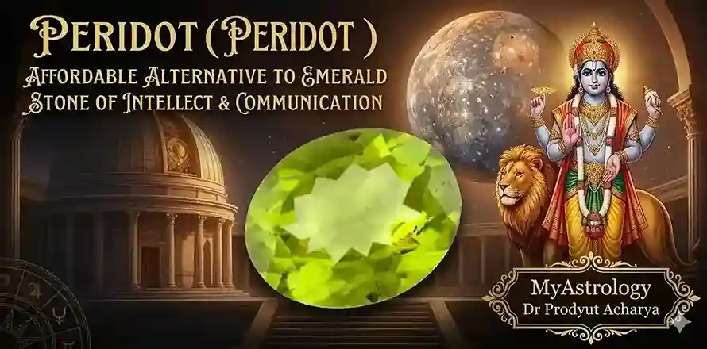
পেরিডট (Peridot)
হীরার সাশ্রয়ী বিকল্প — প্রেম ও সৌন্দর্যের পাথর
🔬 Peridot Olivine শ্রেণির খনিজ — Mg ও Fe-এর সিলিকেট। Mohs ৬.৫–৭.০ — মাঝারি শক্ত। Egypt-এর Zabargad দ্বীপ (Red Sea) ঐতিহাসিক উৎস। Arizona (USA) ও Pakistan-ও সেরা উৎস। উল্কায় পাওয়া Peridot 'space peridot' নামে পরিচিত।
মিশরীয় পুরাণে পেরিডটকে 'সূর্যের পাথর' বলা হয় — রাতেও জ্বলজ্বল করে বলে। ভারতীয় জ্যোতিষে শুক্রের সবুজ-হলুদ আভার সাথে এর রঙ সামঞ্জস্যপূর্ণ। আশ্চর্যজনকভাবে পেরিডট উল্কাপিণ্ডেও (Pallasite meteorite) পাওয়া গেছে।
🔍 "শুক্রের উপরত্ন কি" · "পেরিডট রত্নের উপকারিতা" · "হীরার বিকল্প রত্ন কি"
বৃষ ও তুলা লগ্নে (শুক্র লগ্নেশ) বিশেষ উপকারী। শুক্রের মহাদশায় (২০ বছর) হীরা না পেলে Peridot পরুন। প্রেম, বিবাহ, সৌন্দর্য ও সৃষ্টিশীলতায় সহায়ক।
- পেরিডট অ্যাসিডে দ্রবীভূত হয় — পারফিউম ও ঘামের স্পর্শ এড়ান
- Mohs ৬.৫ তাই মাঝারি শক্ত — আঁচড় থেকে বাঁচান
- তীব্র তাপমাত্রা পরিবর্তন এড়ান
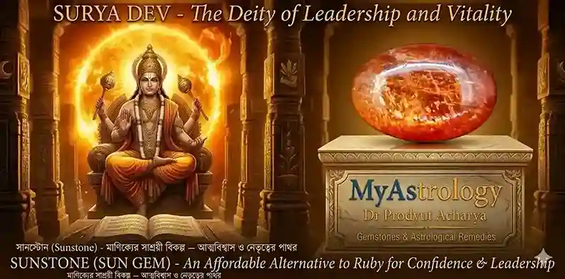
লাল গার্নেট (Red Garnet)
প্রবালের বিকল্প — শক্তি ও সাহসের পাথর
🔬 Red Garnet (Almandine variety) Fe₃Al₂(SiO₄)₃ — iron-rich silicate। Mohs ৭–৭.৫ তাই প্রবালের চেয়ে অনেক শক্ত। Andradite (Ca₃Fe₂Si₃O₁₂) ও Pyrope (Mg₃Al₂Si₃O₁₂) অন্য দুটি লাল Garnet variety।
স্কন্দপুরাণে মঙ্গলের সাথে লাল রঙের সংযোগ — 'রক্তবর্ণ রত্নে শক্তি বিরাজ করে'। Red Garnet প্রবালের চেয়ে টেকসই ও সহজলভ্য। যোদ্ধাদের রত্ন — সাহস, শক্তি ও মঙ্গল দোষ প্রশমনে ব্যবহৃত।
🔍 "মঙ্গলের উপরত্ন কি" · "গার্নেট রত্ন কার জন্য" · "প্রবালের বিকল্প রত্ন"
মেষ ও বৃশ্চিক লগ্নে (মঙ্গল লগ্নেশ) বিশেষ উপকারী। মঙ্গলের মহাদশায় (৭ বছর) প্রবাল না পেলে Red Garnet পরুন। মঙ্গল দোষে বিবাহের বাধা দূরে সহায়ক।
- Star Garnet ও regular Garnet-এর মূল্য অনেক আলাদা — সঠিক variety নির্বাচন করুন
- মিথুন, কন্যা ও তুলা লগ্নে সাবধান
- প্রবাল ও পান্না একসাথে পরবেন না

ব্লু টোপাজ (Blue Topaz)
নীলকান্তমণির নিরাপদ বিকল্প — মানসিক দৃঢ়তার পাথর
🔬 Blue Topaz সাধারণত colorless Topaz-কে irradiation + heating-এ নীল করা হয়। Mohs ৮.০ — অত্যন্ত শক্ত ও টেকসই। London Blue সবচেয়ে গভীর নীল (irradiation বেশি), Swiss Blue মাঝামাঝি, Sky Blue হালকা। Natural Blue Topaz অত্যন্ত বিরল।
Blue Topaz শনির গভীর নীল আভার সাথে সামঞ্জস্যপূর্ণ। ভারতীয় জ্যোতিষে এটি নীলকান্তমণির নিরাপদ ও সহজলভ্য বিকল্প। লন্ডন ব্লু সর্বোচ্চ মানের — গভীর নীল রঙ শনির কর্ম ও ন্যায়বিচারের প্রতীক।
🔍 "ব্লু টোপাজ কি শনির উপরত্ন" · "কেতুর উপরত্ন কি" · "নীলার বিকল্প কোন রত্ন"
মকর ও কুম্ভ লগ্নে বিশেষ উপকারী। শনির সাড়েসাতিতে Amethyst-এর চেয়ে বেশি শক্তিশালী বিকল্প। কেতুর উপরত্ন হিসেবেও কার্যকর। শনির মহাদশায় (১৯ বছর) পরুন।
- Irradiated Blue Topaz দীর্ঘ সময় সূর্যের আলোয় রাখলে রঙ ফিকে হয়
- Mohs ৮ হলেও perfect cleavage আছে — আঘাত এড়ান
- নীলকান্তমণির সাথে একসাথে পরবেন না

ওপাল (Opal)
লেহ্সুনিয়ার সাশ্রয়ী বিকল্প — আধ্যাত্মিকতা ও মুক্তির পাথর
কেতুর উপরত্ন হিসেবে ওপাল — লেহ্সুনিয়া (Cat's Eye)-এর সাশ্রয়ী ও বর্ণময় বিকল্প। রঙধনুর মতো আভাময় এই পাথর আধ্যাত্মিক উন্নতি, মোক্ষমার্গ ও অন্তর্দৃষ্টি বৃদ্ধি করে।
কার পরা উচিত? — কেতু মহাদশায় যারা আছেন, আধ্যাত্মিক সাধনায় আগ্রহী, ও যাদের কুণ্ডলীতে কেতু দুর্বল বা কষ্টদায়ক।
🔍 "কেতুর উপরত্ন কি" · "ওপাল রত্নের উপকারিতা" · "লহসুনিয়ার বিকল্প"
পারাশর মত: "কেতোস্তু বৈদূর্যং রত্নম্" — কেতুর মূল রত্ন বৈদূর্য (Cat's Eye)। ওপাল তার বর্ণময় ও সাশ্রয়ী বিকল্প হিসেবে শাস্ত্রীয়ভাবে গ্রহণযোগ্য।
শুভ লগ্ন: ধনু · মীন · বৃশ্চিক লগ্নে কেতু যোগকারক হলে বিশেষ উপকারী। কেতুর মহাদশায় (৭ বছর) দ্রুত ফল।
বিশেষ ক্ষেত্র: দ্বাদশ ভাব বা মোক্ষ স্থানে কেতু থাকলে ওপাল আধ্যাত্মিক উন্নতি ঘটায়। দীর্ঘমেয়াদি রোগ, অজানা ভয় ও আধ্যাত্মিক সাধনায় সহায়ক।
বিশেষ নোট: ওপালের বহুবর্ণ আভা কেতুর রহস্যময় প্রকৃতির প্রতীক। আধ্যাত্মিক সাধকদের জন্য এটি বিশেষ অনুকূল।
Australian Black Opal বা Ethiopian Welo Opal সেরা মানের। Doublet বা Triplet Opal কিনবেন না — শুধু Solid Natural Opal নিন। Synthetic বা Glass-filled এড়িয়ে চলুন।
- Australian Black Opal সবচেয়ে মূল্যবান ও শক্তিশালী
- Ethiopian Opal সাশ্রয়ী ও সহজলভ্য — ভালো বিকল্প
- Lab Certificate সহ নিন — Govt. Registered Gem Lab থেকে
- Opal পানিতে দ্রবীভূত হয় না, কিন্তু শুষ্ক হলে ফাটতে পারে
উপরত্নও কুণ্ডলী বিশ্লেষণ ছাড়া পরা উচিত নয়
মূল রত্নের মতো উপরত্নও ভুল পরলে বিপরীত ফল দিতে পারে। ড. প্রদ্যুৎ আচার্য আপনার জন্মকুণ্ডলী দেখে সঠিক উপরত্ন, পরার দিন ও আঙুল নির্ধারণ করবেন — মাত্র ₹১০০১-এ।
বিশ্বাসযোগ্যতা যাচাই করুন
ড. প্রদ্যুৎ আচার্য — SKAVSA সার্টিফাইড Gem Therapist, Vedic Jyotish PhD (Gold Medal), রানাঘাট, নদিয়া
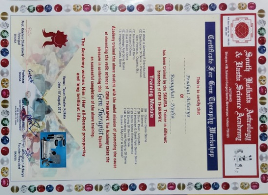
📿 রুদ্রাক্ষ — শিবের অশ্রু, মানবের রক্ষাকবচ
কোন রুদ্রাক্ষ কার জন্য শুভ? রুদ্রাক্ষ পরার নিয়ম, রুদ্রাক্ষ কোন গ্রহের জন্য ভালো — সম্পূর্ণ শাস্ত্রীয় গাইড
শাস্ত্রীয় উৎস: শিবমহাপুরাণের বিদ্যেশ্বর সংহিতায় (অধ্যায় ২৫) রুদ্রাক্ষের বিস্তারিত বিবরণ আছে। পদ্মপুরাণ, দেবীভাগবত পুরাণ ও অথর্বশিরোপনিষদেও রুদ্রাক্ষের মাহাত্ম্য বর্ণিত। "রুদ্রাক্ষ-ধারণাদেব মুক্তো ভবতি বন্ধনাৎ" — রুদ্রাক্ষ ধারণেই বন্ধন থেকে মুক্তি।
বৈজ্ঞানিক পরিচয়: রুদ্রাক্ষ হলো Elaeocarpus ganitrus বৃক্ষের বীজ। এই বৃক্ষ হিমালয়ের পাদদেশে (নেপাল, ভারতের উত্তরাখণ্ড), ইন্দোনেশিয়া ও শ্রীলঙ্কায় জন্মায়। বীজের গায়ে স্বাভাবিক খাঁজরেখা (suture) থাকে — সেই খাঁজের সংখ্যাকেই বলে 'মুখ'।
বৈজ্ঞানিক গবেষণা: ড. সুহাস রাও (Bangalore University) ও অন্যান্য গবেষকরা দেখিয়েছেন যে রুদ্রাক্ষের bioelectric capacity আছে। এটি পরলে heart rate নিয়ন্ত্রিত হয়, blood pressure স্থিতিশীল হয় এবং electromagnetic field তৈরি হয় যা nervous system-কে প্রশান্ত করে।
"রুদ্রাক্ষ পরা মানে শিবের স্মৃতিকে বুকে ধারণ করা। যে মুহূর্তে রুদ্রাক্ষ ধারণ করা হয়, সেই মুহূর্ত থেকে মানুষ একটি ধ্যানের অবস্থায় প্রবেশ করে।" — শিবমহাপুরাণের ব্যাখ্যায়
রুদ্রাক্ষ ও রত্ন একসাথে পরা যায় কি? হ্যাঁ, অধিকাংশ ক্ষেত্রে যায়। তবে শনির রুদ্রাক্ষ (৭ মুখী) ও সূর্যের রত্ন (মাণিক্য) একসাথে সতর্কতার সাথে পরুন। জন্মরাশি অনুযায়ী রুদ্রাক্ষ নির্বাচনের জন্য বিশেষজ্ঞের পরামর্শ নিন।
🔍 সার্চ করা হয়: "কোন রুদ্রাক্ষ কার জন্য শুভ" · "রুদ্রাক্ষ পরার নিয়ম" · "রুদ্রাক্ষ কোন গ্রহের জন্য ভালো" · "রুদ্রাক্ষ ও রত্ন একসাথে পরা যায় কি" · "জন্মরাশি অনুযায়ী রুদ্রাক্ষ নির্বাচন"
📿 রুদ্রাক্ষ — ১ থেকে ১৫ মুখী
এক মুখী রুদ্রাক্ষের উপকারিতা: সবচেয়ে বিরল ও মূল্যবান। আত্মজ্ঞান, মোক্ষ ও নেতৃত্বের জন্য। সূর্যের দুর্বলতায় বিশেষ উপকারী। কাজু আকৃতির নেপালি ১ মুখী সত্যিকারের বিরল।
দুই মুখী রুদ্রাক্ষ কি কাজ করে: দাম্পত্য সম্পর্ক উন্নতি, মানসিক শান্তি ও চন্দ্রের শক্তিবর্ধনে। শিব ও শক্তির একতার প্রতীক। বিবাহিত দম্পতির জন্য বিশেষ শুভ।
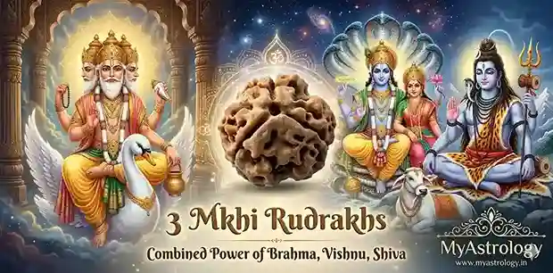
তিন মুখী রুদ্রাক্ষের উপকারিতা: আত্মবিশ্বাস বৃদ্ধি, মঙ্গলের কুপ্রভাব কমায়। পূর্বজন্মের পাপক্ষয়ে ও ব্যক্তিত্ব উন্নয়নে। ব্রহ্মা-বিষ্ণু-মহেশ্বরের একত্রিত শক্তির প্রতীক।
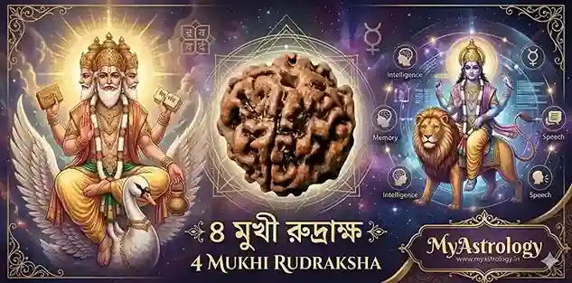
চার মুখী রুদ্রাক্ষ কার জন্য: বুদ্ধি, স্মৃতি ও বাকশক্তির উন্নতি। ছাত্র, শিক্ষক ও বক্তাদের জন্য বিশেষ উপকারী। বুধের দুর্বলতায় অত্যন্ত কার্যকর। চার বেদের প্রতীক।
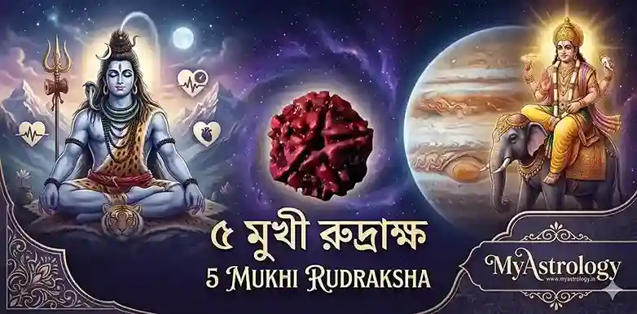
পাঁচ মুখী রুদ্রাক্ষ পরার উপকারিতা: সর্বশুভ — সবাই পরতে পারেন। কোনো লগ্ন বা রাশিতে ক্ষতি নেই। বৃহস্পতির শক্তিবর্ধনে সর্বোত্তম। গবেষণায় প্রমাণিত — রক্তচাপ ও heart rate নিয়ন্ত্রণে সাহায্য করে।
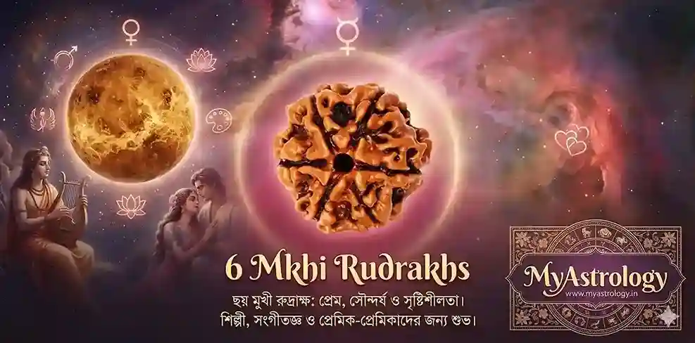
ছয় মুখী রুদ্রাক্ষ কার জন্য শুভ: প্রেম, সৌন্দর্য ও সৃষ্টিশীলতায়। শুক্রের নেতিবাচক প্রভাব কমায়। শিল্পী, সংগীতজ্ঞ ও প্রেমিক-প্রেমিকাদের জন্য বিশেষ উপকারী।
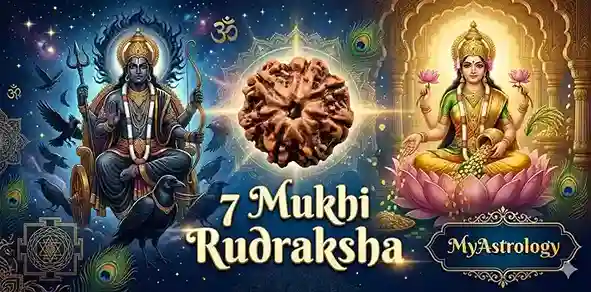
সাত মুখী রুদ্রাক্ষ শনির জন্য ভালো কি: হ্যাঁ, অত্যন্ত ভালো। কোন রুদ্রাক্ষ ধন বৃদ্ধি করে? — ৭ মুখী রুদ্রাক্ষ। দারিদ্র্যনাশ, ব্যবসায় উন্নতি ও শনির সাড়েসাতিতে রক্ষাকবচ।
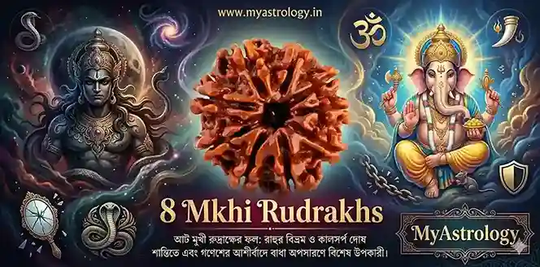
আট মুখী রুদ্রাক্ষের ফল: রাহুর বিভ্রম থেকে মুক্তি। গণেশের আশীর্বাদে সকল বাধা অপসারণ। অদৃশ্য শত্রু প্রতিরোধে ও কালসর্প দোষ শান্তিতে বিশেষ উপকারী।
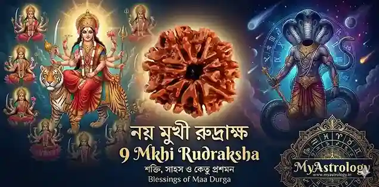
নয় মুখী রুদ্রাক্ষের উপকারিতা: শক্তি, সাহস ও কেতুর দুর্দশা প্রশমনে। মা দুর্গার আশীর্বাদ। দীর্ঘমেয়াদি রোগ ও অজানা ভয় থেকে মুক্তিতে। নয় দুর্গার শক্তির প্রতীক।
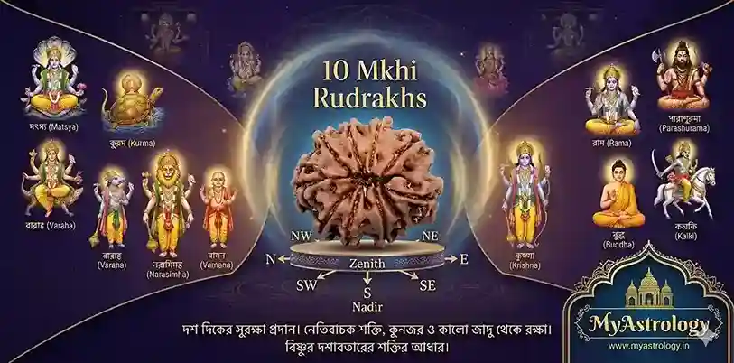
দশ মুখী রুদ্রাক্ষ কার জন্য: দশ দিকের সুরক্ষা প্রদান। নেতিবাচক শক্তি, কুনজর ও কালো জাদু থেকে রক্ষা। বিষ্ণুর দশাবতারের শক্তির আধার।
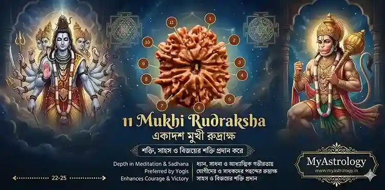
এগারো মুখী রুদ্রাক্ষ কি কাজ করে: ধ্যান, সাধনা ও আধ্যাত্মিক গভীরতায়। যোগীদের ও সাধকদের পছন্দের রুদ্রাক্ষ। সাহস ও বিজয়ের শক্তি প্রদান করে।
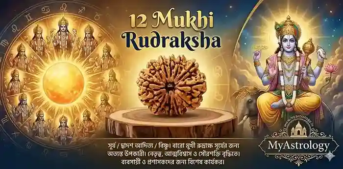
বারো মুখী রুদ্রাক্ষ সূর্যের জন্য কি: হ্যাঁ, অত্যন্ত উপকারী। নেতৃত্ব, আত্মবিশ্বাস ও সৌরশক্তি বৃদ্ধিতে। ব্যবসায়ী ও প্রশাসকদের জন্য বিশেষ কার্যকর।
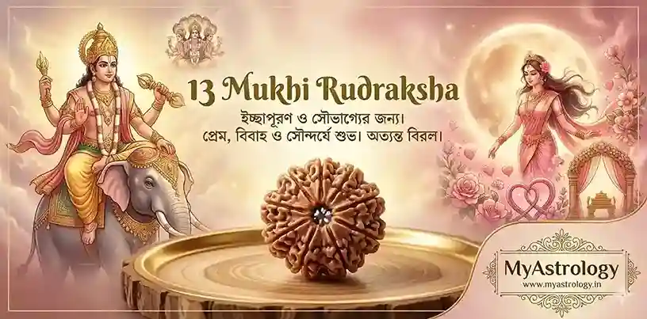
তেরো মুখী রুদ্রাক্ষ কার জন্য শুভ: ইচ্ছাপূরণ ও সৌভাগ্যের জন্য। শুক্রের সাথে যুক্ত — প্রেম, বিবাহ ও সৌন্দর্যে শুভ। অত্যন্ত বিরল — সংগ্রহ করা কঠিন।
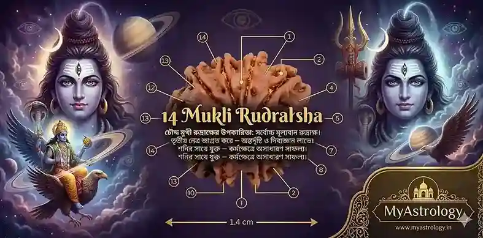
চৌদ্দ মুখী রুদ্রাক্ষের উপকারিতা: সর্বোচ্চ মূল্যবান রুদ্রাক্ষ। তৃতীয় নেত্র জাগ্রত করে — অন্তর্দৃষ্টি ও দিব্যজ্ঞান লাভে। শনির সাথে যুক্ত — কর্মক্ষেত্রে অসাধারণ সাফল্য।
পনেরো মুখী রুদ্রাক্ষ বিশেষত্ব: অত্যন্ত দুর্লভ ও মূল্যবান। পশুপতিনাথের স্বরূপ। ব্যবসায়িক সাফল্য, সম্পদ বৃদ্ধি ও আধ্যাত্মিক উন্নতিতে। নেতৃত্বদানকারীদের জন্য বিশেষ উপকারী।
📜 রুদ্রাক্ষ পরার নিয়ম, কোন দিনে পরা উচিত ও আসল-নকল পরীক্ষা
রুদ্রাক্ষ কীভাবে পরতে হয়: প্রথমে রুদ্রাক্ষ গঙ্গাজল বা কাঁচা দুধে ধুয়ে নিন। সোমবার সকালে স্নান করে শিবের সামনে রেখে "ওঁ নমঃ শিবায়" ১০৮ বার জপ করুন। তারপর ধারণ করুন।
রুদ্রাক্ষ কোন দিনে পরা উচিত: সোমবার সর্বোত্তম। তবে শনির রুদ্রাক্ষ (৭ মুখী) শনিবার পরলে বিশেষ ফল পাওয়া যায়। মঙ্গলবার ৩ মুখী বা ৯ মুখী পরা শুভ।
রুদ্রাক্ষ আসল না নকল কীভাবে বুঝবেন:
- দুটি তামার পয়সার মাঝে রাখুন — আসল রুদ্রাক্ষ ধীরে ঘুরবে
- জলে ভিজিয়ে রাখুন — আসল ডুবে যাবে (ঘনত্ব বেশি), নকল ভাসতে পারে
- মুখের খাঁজ পরিষ্কার ও স্বাভাবিক হওয়া উচিত — কৃত্রিম কাটিং চেনা যায়
- নেপাল বা Haridwar-এর certified বিক্রেতার কাছ থেকে নিন
🔍 সার্চ করা হয়: "রুদ্রাক্ষ কিভাবে পরতে হয়" · "রুদ্রাক্ষ কোন দিনে পরা উচিত" · "রুদ্রাক্ষ আসল না নকল কিভাবে বুঝবেন" · "কোন রুদ্রাক্ষ মানসিক শান্তি দেয়" · "কোন রুদ্রাক্ষ ধন বৃদ্ধি করে"
🌿 উপরত্ন — বিকল্প ও সহায়ক রত্নপাথর
গ্রহ অনুযায়ী উপরত্ন নির্বাচন — সস্তা রত্ন কি ফল দেয়? চন্দ্রের উপরত্ন কি, শনির উপরত্ন কি — সম্পূর্ণ গাইড
উপরত্ন কি? মূল গ্রহ-রত্নের বিকল্প হিসেবে ব্যবহৃত কম মূল্যের রত্নপাথরকে উপরত্ন বলে। উদাহরণ — পুখরাজ (Yellow Sapphire) না পেলে Citrine ব্যবহার করা যায়। তবে উপরত্নের জ্যোতিষীয় শক্তি মূল রত্নের তুলনায় কম।
সস্তা রত্ন কি ফল দেয়? হ্যাঁ, কিছুটা ফল দেয় — তবে মূল রত্নের মতো নয়। উপরত্ন ব্যবহার করলে ফল পেতে বেশি সময় লাগে এবং প্রভাব কম হয়। যদি বাজেট কম থাকে তবে উপরত্ন ব্যবহার করতে পারেন — কিন্তু আগে বিশেষজ্ঞের পরামর্শ নিন।
🔍 সার্চ করা হয়: "গ্রহ অনুযায়ী উপরত্ন নির্বাচন" · "সস্তা রত্ন কি ফল দেয়" · "মাণিকের উপরত্ন কি" · "নীলার উপরত্ন কোনটি" · "পোখরাজের উপরত্ন কি"
📋 রত্ন পরার নিয়ম — রত্ন কত রতিতে, কোন আঙুলে পরতে হয়
রত্ন কত রতিতে পরা উচিত? সাধারণ নিয়ম — শরীরের ওজনের প্রতি ১৫ কেজিতে ১ রতি। ৬০ কেজি ওজনে ন্যূনতম ৪ রতি। তবে সর্বোত্তম হলো বিশেষজ্ঞের নির্দেশমতো।
রত্ন কোন আঙুলে পরতে হয়: অনামিকা — সূর্য ও মঙ্গলের রত্ন। কনিষ্ঠা — চন্দ্রের রত্ন। তর্জনী — বৃহস্পতির রত্ন। মধ্যমা — শনি, রাহু ও কেতুর রত্ন।
জন্মকুণ্ডলী দেখে রত্ন নির্বাচন কীভাবে করবেন: (১) লগ্ন নির্ণয় (২) লগ্নেশের অবস্থান (৩) যোগকারক গ্রহ চিহ্নিতকরণ (৪) চলতি দশা-অন্তর্দশা বিচার (৫) পঞ্চম ও নবম ভাবের শক্তি — এই পাঁচটি বিষয় না দেখে রত্ন পরামর্শ সম্পূর্ণ নয়।
🔍 সার্চ করা হয়: "রত্ন পরার নিয়ম কি" · "রত্ন কোন আঙুলে পরতে হয়" · "রত্ন কত রতিতে পরা উচিত" · "জন্মকুণ্ডলী দেখে রত্ন নির্বাচন কিভাবে করবেন" · "কোন গ্রহের জন্য কোন রত্ন পরতে হয়"
⚖️ গুরুত্বপূর্ণ Disclaimer — অবশ্যই পড়ুন
এই পেজের সমস্ত তথ্য সম্পূর্ণ শিক্ষামূলক ও ঐতিহ্যবাহী জ্যোতিষশাস্ত্রীয় জ্ঞানের ভিত্তিতে প্রকাশিত। MyAstrology রত্নপাথর, রুদ্রাক্ষ বা উপরত্ন বিক্রি করে না। কোনো রত্নপাথর ধারণ করার আগে অবশ্যই কুণ্ডলী বিশ্লেষণ করিয়ে বিশেষজ্ঞের পরামর্শ নিন। রত্নপাথর চিকিৎসার বিকল্প নয়। সর্বদা government registered authentic lab certified রত্ন কিনুন। সরকার-নিবন্ধিত প্রামাণিক ল্যাব সার্টিফিকেট ছাড়া কোনো রত্ন গ্রহণ করবেন না।

💎 আপনার জন্য কোন রত্ন সঠিক?
কুণ্ডলী না দেখে রত্ন পরা যেমন ডাক্তার না দেখে ওষুধ খাওয়া। ড. প্রদ্যুৎ আচার্য আপনার জন্মকুণ্ডলী বিশ্লেষণ করে সঠিক রত্ন, উপরত্ন বা রুদ্রাক্ষ নির্বাচনে সাহায্য করবেন।